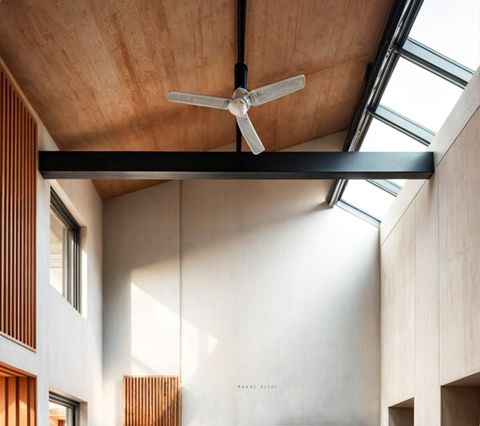

Argus Air завершила монтаж интеллектуальной климатической системы в элитном жилом комплексе Москва-Сити
Компания Argus Air завершила проектирование и монтаж комплексной системы климат-контроля в премиальном жилом комплексе «Башня Федерация» в Москва-Сити. Система объединяет приточно-вытяжную вентиляцию с рекуперацией тепла, канальное кондиционирование и интеллектуальное управление. Особенность проекта - полная интеграция в дизайн интерьеров площадью более 800 м² без видимых элементов. Работы выполнены за 3 месяца с соблюдением строгих акустических требований (уровень шума не превышает 25 дБ). Система позволяет поддерживать температуру +22°C ±0,5°C и влажность 45-50% в каждом помещении Компания Argus Air завершила проектирование и монтаж комплексной системы климат-контроля в премиальном жилом комплексе «Башня Федерация» в Москва-Сити. Система объединяет...